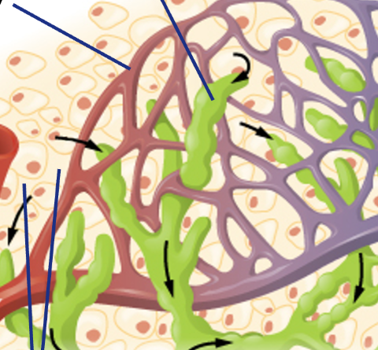
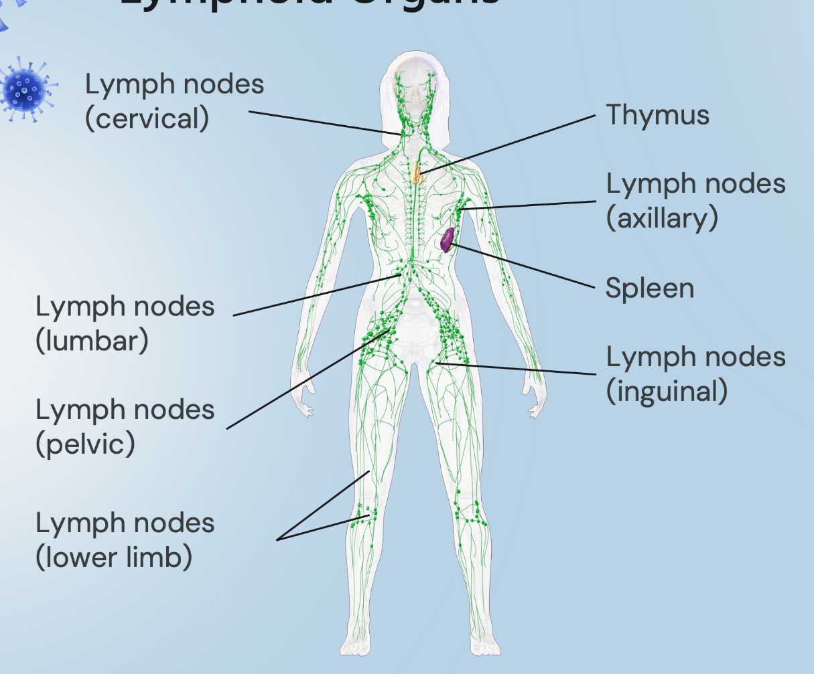

The Unsung Hero: Practice Activities
Check your understanding of the key concepts from this lesson with the following practice activities. These activities are optional and ungraded. You can check your answers and try again as many times as you'd like.
Q1. Identify the fluids
Identify the fluid at each numbered location in the diagram. You may use an answer more than once.

Q1 alternative: Text-based fluid identification
Prefer not to use the image? Identify the fluid at each location described below. Choose one answer for each location. You may use an answer more than once. This version covers the same three locations as the image activity; you only need to complete one version.
Q2. Put fluid flow in order
Put the steps in order to show how fluid moves from blood through the lymphatic system and back to blood. Use the up/down buttons or drag the steps.
Q3. Sort lymphoid organs
Identify whether each lymphoid organ is primary or secondary.
